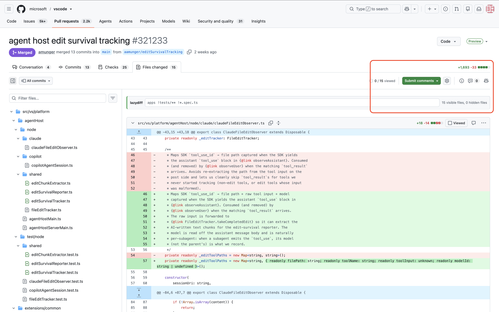
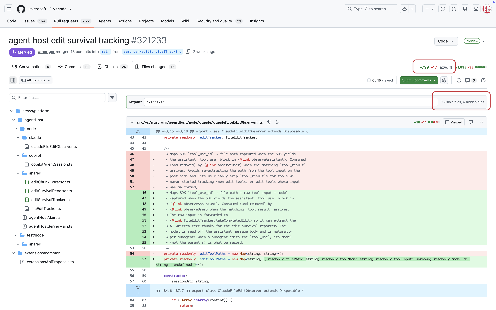
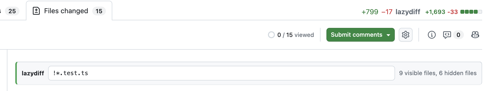
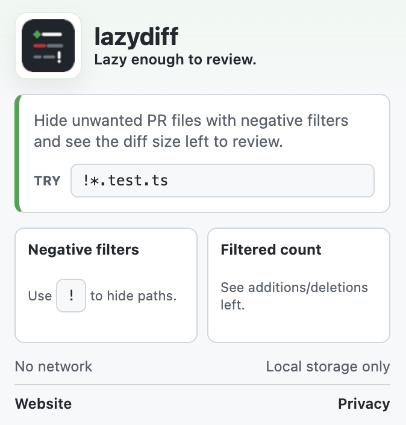

apps
Show matching paths.
Negative filters for GitHub PRs
Hide tests, generated files, specs, or any path you do not want to review, then see the diff size that remains.
Quick demo
Real GitHub PR frames, local filtering, and the remaining diff count.
Watch the short demo playlistScreenshots




Custom syntax
apps
Show matching paths.
!apps
Hide matching paths.
!/apps
Hide root paths only.
apps !*.spec.ts
Show apps, except specs.
Private by default
LazyDiff runs locally on GitHub PR pages. Filter text is stored only in Chrome local storage. See the privacy policy.
Chrome Web Store
LazyDiff is available on the Chrome Web Store. Install it from the listing, or load the generated
extension/ directory for local development.
Status: Published
Extension ID:
bnoohgdhbhegnpdfhneciipfgmmjejhb